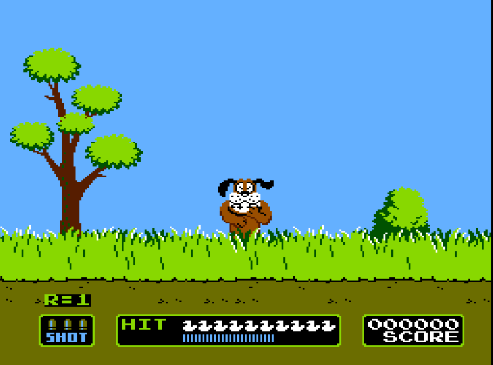

The Start of Video Games Video games have been around for decades. Generation of gamers of been entertained by many forms of it. Nowadays, games have great graphic quality, stunning visual detail, perfect voice acting, smooth controls, amazing gameplay, etc. The video game industry gains ton of money for those reasons. However, it’s doubtful many people know origins and how it was in the first few years. Let’s explore how the gaming industry came about how the first three generation were, beginning with the game that helped boost this industry: Pong. Pong was the one of the earliest video games to be created. Out of all of the other games there was, it was first to become popular to the public. The game is also connected to the origins of Atari. In a company called Syzygy, two men by the names of Nolan Bushnell and Ted Dabney founded the company just mention and created the first arcade video game called Computer Space, a clone of another game called Spacewars!. Unfortunately in 1972, it was a commercial failure; despite reaching $3 million. After that, they decided that they would leave the company and create another company that produces game through licensing ideas with other companies. They were going to give the company the same name as their previous one, but later learned that it was already in use by a candle and a roofing company. Bushnell later decided to name it Atari, a reference to his favorite game called Go. They went to Sunnyvale, California and rented their first office there. Later on, they would get their first contract with Bally Manufacturing, a company in making gaming technology, in making a driving game. Soon after, they hire their first employee; an engineer named Alan Alcorn. Alcorn really had no experience with video games before Atari. Bushnell give him a project to work without knowing that it was really a warm-up to get him into video games. However, he was concern that a driving game would be too complicated for Alcorn. In May of the same year, Bushnell went to Burlingame, California to visit Magnavox Profit Caravan to go see a demonstration of the Magnavox Odyssey, the first commercial home console and the starter of the first generation of video games. During the demonstration, they were showing and letting people play their games. He played them, but a particular game caught his attention; a table tennis game. After seeing that, he gave Alcorn a task to make a test project of it. When working on, Alorn thought it looking boring. So he added addition things into it, such as sound and limit on how high and low the paddles can go. In August, they put the first arcade game in a local bar. Within a few days, it quickly became popular; so popular, in fact, that when Bushnell went to inspect a malfunction in the machine, he discovered that the problem was that it was overflowing with coins. Realizing its popularity, he decide to use Pong to benefit Atari. They released more arcades visions of it and they even sent some to foreign countries. Two years after it was released, they created their first console called Atari VCS (Video Computer System, which changed to Atari 2600 later on) with a home-version of Pong included with it. Many company took advantage of the game’s popularity and made clones of it. This continued up until 1977. The first generation of video games was doing well, especially for Atari, and went on to the second generation. Up until 1983, the economy for video games dropped by 97%. These lead many companies to go bankrupt and the end of the second generation. After 7 years of the crash, it seemed like it was the end of video games, until Nintendo stepped in to save the industry. In Japan in 1983, Nintendo released a game console called the Family Computer (A.K.A. the Famicom) and it was very popular. Because of that, Nintendo decided to sell it internationally. In North America in the same year, they made a deal with Atari to release their console under the name Nintendo Advanced Video System. However, many things occurred during their development, such as having their CEO fired, and it was going nowhere and Nintendo decided to publish it themselves. When they announced their system, renamed the Nintendo Entertainment System (NES for short) later on, to the public, many people were a bit iffy about it. Because of the crash, a majority of them believed that it won’t be successful at all. They started off marketing in New York City in October 18, 1985. They ended up getting different review of it; some saying it was failing and others saying it was incredible. They continued on marketing by releasing the consoles nationwide in February 1986. Many retailers and consumer really were convinced in the system. The clone games before were exaggerated to their original counterparts in terms of graphics and art style, such as Pac-man. Nintendo targeted to gain their confidence about their system. Their game had picture that really looked similar to the game itself and had symbols to show what genre it’s a part of. They had a strict policy that a game in their system should have any profanity, sex, religious, and/or political content censored because they were trying to aim it at children. They ended up releasing many different bundles of the console over the years. An example of this is the Action Set, which included the system, two game controllers, a light gun called the NES Zapper, and a cartridge containing the popular games Super Mario Bros. and Duck Hunt. As the time goes by, Nintendo gained a few competitors, with SEGA being their biggest rival with their console, the SEGA Genesis. The third generation of video games become the era of 8-bit games.  Video games wouldn’t have existed if it wasn’t for Nintendo. The moments that led up to that marked that video games would continue on for more years to come. Video games continue to evolve over time and getting better in many different ways for all of gamers out here in the world.